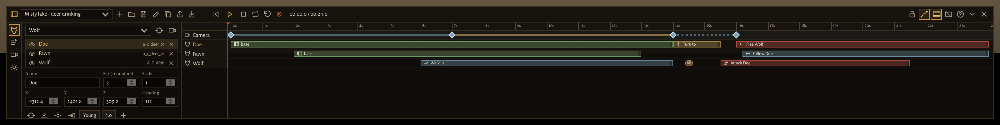
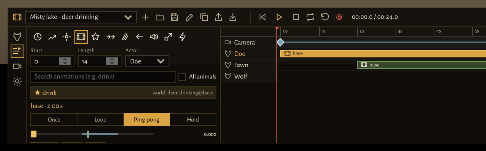
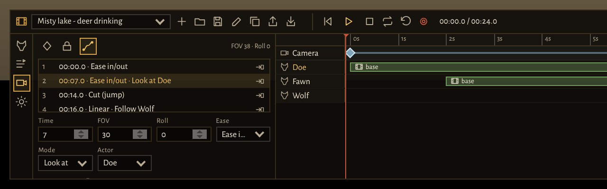
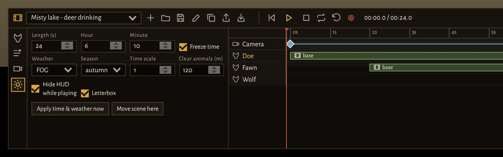
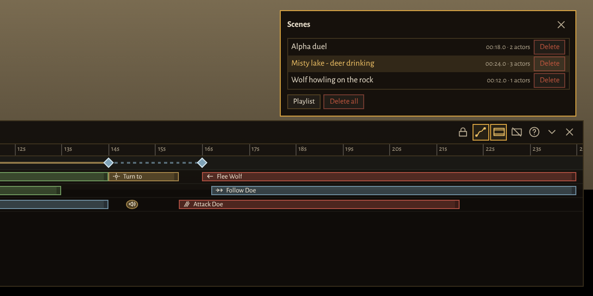

1 · Overview
liw_cinematic is a scene builder for the server's trailer. You place animals in the world as actors, give them steps on a shared timeline (walk, turn, animation, follow, attack, flee, sounds …), lay out a camera move with keyframes, set the time of day, weather and season, and play the scene – as a rehearsal with the builder visible or as a recording with a countdown and no UI at all, ready for OBS.

For a recording server only. On the live server the resource stays off. The tool makes your own animal invisible and invulnerable and sets the time of day and weather for all players.
Good to know
- Only you see the actors. They are local animals on your machine. Other players on the server don't see them – recording is done by exactly one person.
- Time of day, weather and season are the server's. Everyone sees them, and they stay that way even after a restart (liw_world saves them).
- Everything runs on time. Every step and every keyframe has a point in time in seconds. When you scrub the timeline, actors and camera jump to the matching moment.
- Scenes are files on the server (
scenes/<id>.json) and can be exported as JSON and imported elsewhere.
2 · Setup
Starting the resource
In the recording server's server.cfg, after the other LiW resources:
ensure liw_cinematic
# Who may use the tool (in addition to everyone with command.liwdev):
add_ace group.admin liw.cinematic allowOn the live server the line ensure liw_cinematic stays commented out
(that's also how it is in docs/server.cfg.example).
What it needs
| Resource | Used for |
|---|---|
| liw_core | Core library: UI, server callbacks, keys, ground detection, model loading. |
| liw_ui | The interface. The builder is a component that is only loaded when it is opened. The animation list comes from the animation browser. |
| liw_species | The species (models, fur, names) for the actor list. |
| liw_world (optional) | Time of day and weather. Without it these fields have no effect. |
| liw_seasons (optional) | Season. |
3 · Opening and moving
Type /liw_cine in chat to open and close the builder.
- While it is open, your own animal is invisible, frozen and invulnerable, and nothing pays attention to it. It flies along with the camera so the area stays loaded. The server keeps granting it a grace period for its movement and health checks.
- When you close the builder, your animal is back exactly where it stood before.
- The rest of the UI (HUD, other menus) is hidden; only notifications remain – during a recording they disappear too.
The free camera
| Key | Effect |
|---|---|
| Hold Right mouse button | Look around |
| W A S D | Fly |
| Q / E | Down / up |
| Shift / Alt | Fly fast / slow |
| Mouse wheel | Zoom (field of view, FOV) – small = telephoto, large = wide angle |
| Alt + Mouse wheel | Tilt the camera (roll) |
A name tag floats above every actor. Clicking it selects the actor. When a tool is waiting for a point (placing an actor, waypoints, look-at point), a Left click into the world sets that point; Esc cancels.
4 · The interface
The toolbar (top of the builder)
From left to right:
- Scene: dropdown of saved scenes · New · Scenes (list with load, delete, Playlist) · Save (Ctrl+S) · Rename · Duplicate · Export (JSON) · Import.
- Playback: To start (Home) · Play/Stop (Space) · Stop · Loop · Reset all actors to the start · Record (red button, Shift+R) · current time / scene length.
- Right: Camera follows the path while scrubbing · Show paths in the world · Letterbox (B) · Hide builder (H) · Keys (F1) · Collapse (Tab) · Close.
The inspector (left) – four tabs
| Tab | Contents |
|---|---|
| 1 · Actors | Add and select animals, name, fur, size, position, heading. |
| 2 · Steps | Add and configure the steps of the selected actor. |
| 3 · Camera | Keyframes, transitions, camera mode, handheld, depth of field. |
| 4 · World | Length, time of day, weather, season, slow motion, clear animals, letterbox. |
The timeline (right)
- Ruler: click or drag = scrub. The red line is the cursor; new steps and keyframes are placed at its position.
- Camera row: the keyframes as diamonds. Drag to move them.
- One track per actor with its steps as blocks:
- Drag a block = move it, drag its right edge = change its length.
- Alt while dragging = no snapping.
- Double-click an empty spot on the track = "Add step" menu at that time.
- Ctrl+Mouse wheel = zoom the timeline.
While you edit, the builder shows the camera path in blue, the keyframes and the actors' paths in the world (yellow = selected actor).
5 · Actors
Which animals
- Every species from liw_species (deer split into doe and buck).
- The legendary animals from Red Dead Online, e.g.
mp_a_c_wolf_01,mp_a_c_bear_01,mp_a_c_buck_01(list inConfig.ExtraModels). - "Other model …": any animal model starting with
a_c_ormp_a_c_.
Adding
- Actors tab (1), pick the animal at the top.
- Point the camera at the spot and click "Add where the camera looks" (crosshair button) – or "Add below the camera".
- Fine-tune (see below), press G to put it on the ground.
Actor settings
| Field | Meaning |
|---|---|
| Name | Shown on the name tag and in the timeline, e.g. "Held (Wolf)". |
| Fur (-1 random) | Number of the fur preset. -1 picks a random one every time the scene loads – for a trailer, better use a fixed number. |
| Scale | 1 = normal (0.2–3). The "Young" button sets the species' cub size. |
| X / Y / Z, Heading | Position and facing direction in degrees. |
| Show / hide (eye) | Show/hide (e.g. an animal that only appears later via Teleport). |
Positioning with keys
| Key | Effect |
|---|---|
| ← → ↑ ↓ | Move, relative to the camera (Shift: 1 m per press) |
| Page Up / Page Down | Higher / lower |
| , / . | Rotate (Shift: 45°) |
| G | Put on the ground |
| P | To the crosshair (where the camera is looking) |
| F | Camera to the actor (bring it into view) |
| Del | Delete actor |
Actors don't react on their own: they don't flee, don't get startled, are invulnerable and are in their own group. The tool renews this every 0.5 seconds – they only do what their steps tell them.
6 · Steps
A step is an instruction to an actor with a start and a length in seconds. To add one: select the actor, move the cursor to the start time, and in the Steps tab (2) click the icon of the step type – or double-click the track.
| Type | What happens | Fields |
|---|---|---|
| Wait | Stands still. | – |
| Go to | Walks along a path. Click the points into the world one after another, Esc finishes. | Points, gait (walk/trot/run), "Around obstacles" (navmesh) |
| Turn to | Turns towards a point, another actor or the camera. | Target |
| Animation | Plays a clip, with frame control (chapter 7). | Clip, mode, Start/End, A/B, Speed, Blend in/Blend out |
| Scenario | A game scenario, e.g. WORLD_ANIMAL_WOLF_HOWLING. Suggestions in the list, free text works too. | Name |
| Follow | Follows another actor. | Target, distance (m), gait |
| Attack | Staged: runs over and plays the species' attack animation, without damage. Real fight: an actual fight, both stay invulnerable. | Target, "Real fight" |
| Flee | Flees from another actor. | From, distance (m) |
| Sound | An animal sound such as howl, growl, roar, snort – instant. | Sound |
| Scale | Changes the size – instantly at the start. | Value |
| Teleport | Puts the actor at a point – instantly at the start. | Point, heading |
Editing
- Ctrl+C copies the selected step, Ctrl+V pastes it at the cursor, Ctrl+D duplicates it right after itself, Del deletes it.
- Ctrl+Z / Ctrl+Y: undo / redo.
- An actor only ever does one thing: if two of its steps overlap, the one that started later wins.
The exceptions are the instant steps Sound, Scale and Teleport – they may sit in the middle of another step
(e.g. a
howlduring a scenario).
Example – wolf runs to the rock and howls: "Go to" from 0 to 6 s (three points up to the
rock, gait trot), "Turn to" camera from 6 to 7 s, "Scenario" WORLD_ANIMAL_WOLF_HOWLING
from 7 to 14 s, plus a "Sound" howl at 7.5 s.
7 · Animations and frame control
The animation step can do more than "play clip": it determines exactly which part of the clip is seen. Typical case: the doe should already be drinking when the scene starts – not lower its head first.

Choosing a clip
The search looks through the game's animation list (e.g. drink, howl,
sleep). The groups for the actor's species come first (wolf → wolf, cougar → cougar/bigcat …);
"All animals" searches everywhere. A ★ marks clips the species already uses in the game.
The phase
Every point in a clip has a phase between 0 (beginning) and 1 (end). 0.5 is the middle. All frame values are phases.
| Field | Meaning |
|---|---|
| Start / End | The phase the clip starts at / how far it runs (in Once mode). |
| A / B | The range that is repeated in Loop and Ping-pong. |
| Frame | The frozen phase in Hold mode. |
| Speed | 1 = normal, 0.5 = half speed, 2 = double. |
| Blend in / Blend out | How soft the transition from and to the previous movement is (larger = faster). |
The four modes
| Mode | Sequence | Good for |
|---|---|---|
| Once | Start → End, then the end frame stays. | Getting up, lying down, a single bite |
| Loop | Start → B, then A → B over and over. | Eating, digging, chewing |
| Ping-pong | Start → B, then B → A → B back and forth. | Drinking: the head stays down |
| Hold | A single frame, frozen. | Still image, pose at the memorial stone |
Ping-pong, Start 0.45 · A 0.40 · B 0.70
Phase 0.45 ──▶ 0.70 ──▶ 0.40 ──▶ 0.70 ──▶ 0.40 …
Start B A B A
(head already in the water, never lifts it fully)Finding the right frame
- Drag the phase slider – the actor shows the frame in the world right away.
- At the spot you want, press → Start, → End, → A, → B or → Frame: the slider position is taken over.
- "Fit length" sets the step length to exactly the time from Start to End.
- T tests the step on the actor.
The phase depends only on time. Playing and scrubbing therefore always show the same frame – what you see while scrubbing is what ends up in the recording.
8 · Camera

Setting keyframes
- Move the cursor to the time (J/L = ±0.1 s, with Shift ±1 s).
- Find the shot with the free camera (position, view, zoom, tilt).
- Press K – a keyframe with exactly this shot is created.
Between keyframes the camera moves along a smooth curve (spline) – without jerks, even with uneven spacing. In the list, the arrow button takes the current camera into an existing keyframe; another button jumps to it with camera and cursor.
Transition (per segment up to the next keyframe)
| Transition | Effect |
|---|---|
| Ease in/out | Starts slowly, arrives slowly – the default for calm moves. |
| Ease in / Ease out | Smooth only at the beginning or only at the end. |
| Linear | Constant speed – good for chases. |
| Cut (jump) | No transition: the camera jumps there at the next keyframe. This is how you build cuts within a scene. |
Mode per keyframe
| Mode | Effect |
|---|---|
| Free | Exactly the saved position and view direction. |
| Look at | Position as saved, but always looks at an actor – it stays in frame, even while it moves. |
| Look at point | Looks at a point clicked into the world. |
| Follow | Moves along with the actor. The Offset x y z is relative to its facing direction: x = sideways (right is positive), y = in front of/behind it (negative = behind), z = height. Default 0 / -4 / 1.5 = four metres behind the animal, slightly raised. |
Handheld and depth of field
- Handheld (°) and Shake speed: a slight shake as if hand-held. It is calculated, not random – every run shakes the same way. 0.2–0.5° looks natural.
- Depth of field (experimental): focus in metres (0 = automatic) and strength of the blur.
9 · World

| Field | Meaning |
|---|---|
| Length (s) | Length of the scene (up to 600 s). |
| Hour / Minute, Freeze time | Time of day during playback, optionally frozen (same light on every run). |
| Weather | e.g. FOG, SUNNY, RAIN, SNOW – "unchanged" keeps the current one. |
| Season | spring / summer / autumn / winter – or "Calendar". |
| Time scale | 0.05–1. The whole scene (including the timeline) runs slower. |
| Clear animals (m) | Clears the surrounding area during playback: your own animals are deleted, other players' animals hidden locally, ambient animals switched off. 0 = off. |
| Hide HUD while playing | Hides everything during playback. |
| Letterbox | Black bars in 2.39 : 1 format. They are recorded too – turn them off if you'd rather add them in the edit. |
"Apply time & weather now" applies time of day, weather and season on the server immediately (playback does that anyway). "Move scene here" shifts the whole scene – actors, paths, points and camera – so that the first actor stands where the camera is looking. Afterwards press G for each actor.
10 · Playback and recording
Rehearsal
- Space plays from the cursor and stops again, Shift+Space plays from the beginning.
- Loop: the scene runs over and over.
- "Reset all actors to the start" resets everything to second 0.
- "Camera follows the path while scrubbing" on: the camera jumps along while scrubbing. Off: you can watch the scene from outside while scrubbing.
Recording
- Save the scene.
- Prepare and start your recording software (e.g. OBS).
- Record (red button or Shift+R): the builder and mouse cursor disappear, countdown 3-2-1, the scene plays from the beginning.
- At the end the last frame holds for 1.5 s, then the builder comes back.
Tip: Simply cut the countdown out in the edit. H hides the builder even without recording; the H key in the game (key binding "liw_cine_ui") brings it back.
11 · Managing scenes

- Save (Ctrl+S) creates
scenes/<id>.jsonon the server. Up to 200 scenes, at most 512 KB per file. - Duplicate saves a copy ("… (copy)") – good for variants of a shot.
- Export (JSON): the scene appears as text to copy. "All scenes" exports all saved scenes in one JSON.
- Import: paste JSON (Ctrl+V). A single scene is opened and then has to be saved; a file with several scenes is saved straight away as new scenes.
- Delete all asks for confirmation with a second click.
Playlist
In the "Scenes" dialog → Playlist: tick the scenes and choose a pause between them. The scenes play sorted by name – so number them like in the storyboard ("01 …", "02 …", "13a …").
- Play: each scene from the beginning, the builder stays visible. Stop or H ends it.
- Record: one countdown, then all scenes back to back without the builder – the whole trailer in one recording. H ends it.
- Time of day, weather and season come from each scene. The open scene has to be saved first.
The trailer storyboard
storyboard/trailer.json holds the trailer storyboard as 21 ready-made rough scenes
(described in docs/research/TRAILER_STORYBOARD.md). Copy its content, use
Import in the builder – all 21 scenes are saved. Then load each scene, bring it to the desired
spot with "Move scene here", put the actors on the ground with G and fine-tune camera and
steps.
12 · How-tos
Small recipes to follow. Each one works on its own – combine them for a full scene.
Placing an animal
Way 1 – where the camera is looking (the usual one):
- Fly the camera so the centre of the screen sits exactly on the spot where the animal should stand.
- Actors tab (1), pick the species at the top, e.g. "Wolf".
- Crosshair button "Add where the camera looks". The animal stands on the ground at the centre of the screen.
Way 2 – click into the world: create an actor, then use the actor's "Click in the world to place it" button and choose the spot with a Left click.
Way 3 – below the camera: "Add below the camera" button, then G for the ground. Handy for tight spots (cave, rock ledge) that you can fly right up to with the camera.
Way 4 – type in coordinates: the X / Y / Z fields in the inspector. This puts two animals exactly
on one line (e.g. both Y = 665.4) or at a precise distance (X differing by 3 = 3 m).
Facing: rotate with , / . (with Shift in 45° steps) or use the "Heading" field (0 = north, 90 = west, 180 = south, 270 = east). "Face the camera" makes the animal look into the camera.
Fawn next to its mother: place a doe, a second doe next to it, and on the second one press "Young" – it gets the species' cub size. Give both the same fur (same number instead of -1) so they match.
Setting the time of day
- World tab (4): enter Hour and Minute.
- Turn on "Freeze time": the light is the same on every run – almost always what you want. Off: the clock keeps running during the scene.
- "Apply time & weather now" to see the light right away. Playback sets it anyway.
| Mood | Time | Weather tip |
|---|---|---|
| Dawn, blue light | 05:30 | FOG or MISTY |
| Sunrise, golden light | 06:10–06:40 | SUNNY, FOG |
| Bright day | 10:00–15:00 | SUNNY, CLOUDS |
| Sunset glow | 18:30–19:15 | SUNNY, CLOUDS |
| Blue hour | 19:45 | SUNNY |
| Night with moon | 23:00–03:00 | SUNNY (clear sky) |
The exact times of sunrise and sunset depend on the season – just try a few minutes either way with "Apply time & weather now". The list in the World tab shows which weather types exist. Note: time of day and weather apply to everyone on the server.
Animating an animal from the beginning
Goal: a wolf lies down – the whole movement, from standing to lying.
- Select the wolf, put the cursor at the moment it should lie down (e.g. 2 s).
- Steps tab (2), film icon (Animation).
- Type
wolf_resting stand_enterinto the search and choose the clip…world_wolf_resting@stand_enter(from standing to lying). - Mode Once, Start
0, End1– the whole clip. - "Fit length": the step length matches the length of the clip exactly.
- T tests it. At the end the last frame holds – the wolf is lying down.
If it should then stay down and breathe: right after it, add a second animation step with
…world_wolf_resting@base in Loop mode. To get up later, use
…@stand_exit in Once mode.
Starting an animal in the middle of an animation
Goal: the scene starts and the doe is already drinking – without lowering its head first.
- Create an animation step at 0 s, clip
…world_deer_drinking@base / base. - Slowly drag the phase slider and watch in the world. At the point where the head is in the water
(e.g.
0.45), press → Start. - The mode decides what happens next:
- Once: from there to the end, then stay still.
- Loop: from there to B, then A → B over and over (set A and B with the slider and → A / → B).
- Ping-pong: from there to B, then B ↔ A back and forth – the head stays down.
- Check with Home and Space: the very first frame shows the drinking doe.
Same for other cases: wolf is already howling (start in the middle of the howl), bear is already
standing upright (start in the upright part, then Hold or Ping-pong), cougar is mid-leap (start
just before the highest point, Speed 0.5 for slow motion on this animal only).
Freezing a pose
Mode Hold, slider to the frame you want, → Frame. The animal stands like a statue – good for an old wolf at the memorial stone or a still image at the end of the trailer.
Walk, then do something
Steps one after another on the same track:
Wolf [ Go to (trot, 3 points) 0–6 s ][ Turn to camera 6–7 s ][ Animation: howl 7–12 s ]
↑ Sound "howl" at 7.5 sThe "Go to" length should match the distance: if it is too short, the next step becomes active before the animal arrives; if it is too long, the animal waits at the destination. Check with Space and drag the right edge of the block until it fits.
A simple camera move (from A to B)
- Home (cursor to 0 s). Fly to the start position, set up the view, K.
- Cursor to the end of the move, e.g. 6 s (L with Shift six times).
- Fly to the end position, set up the view, K.
- Camera tab: on the first keyframe set the transition to "Ease in/out".
- Home, Space – the camera glides from A to B. The blue path in the world shows the move.
The move gets slower if the second keyframe sits later (drag its diamond in the camera row to the right).
Camera moves to rebuild
| Move | How to |
|---|---|
| Pan | Two keyframes at the same spot, only the view turns (right mouse button). Smooth transition. |
| Push-in | One keyframe far away, a second keyframe close to the animal. Set both to mode "Look at" → animal so it stays in the centre of the frame. |
| Zoom | Two keyframes at the same spot; on the second, make the FOV smaller with the Mouse wheel (e.g. 45 → 20). |
| Crane shot | First keyframe low at ground level, second high above (E), looking down. Shows the landscape around the animal. |
| Orbit | Four keyframes in a square around the animal (front, right, back, left), e.g. every 3 s, all in mode "Look at" → animal, transition "Linear". The spline turns it into a round circle. |
| Tracking shot | Two keyframes (start and end of the scene), both in mode "Follow" → animal. Offset 0 / -5 / 1.5 = behind, 6 / 0 / 1 = alongside, 0 / 6 / 1 = in front (looking back). |
| Dutch angle | On the keyframe, tilt with Alt+Mouse wheel (e.g. 8°) – an uneasy mood, good for fights. |
| Cut | Set the transition of the keyframe before the cut to "Cut (jump)" – the camera jumps hard to the next shot. |
Tip: Change an existing shot instead of setting a new one: select the keyframe in the list, press "Camera and cursor to this keyframe", adjust the camera, then "Take the camera into this keyframe".
Weather and season
World tab: Weather (e.g. FOG, RAIN, SNOW) and
Season (spring, summer, autumn, winter).
"unchanged" and "Calendar" keep the server's current state. For a winter scene set both together, e.g.
weather SNOW and season winter.
Getting rid of stray animals
World tab → set Clear animals (m) to e.g. 120. During playback all other
animals in that radius disappear – only your actors remain.
Slow motion (time scale)
World tab → Time scale 0.5 = half speed for the whole scene
(animals, camera, timeline). For a single slow moment, build a separate short scene and put it in between in the
playlist. To slow down just one animal: lower the Speed in its animation step.
13 · Examples
Example 1: Doe drinking at a misty lake (20 s)
/liw_cine, fly to the lakeshore holding the right mouse button and using WASD.- World tab: Length
20, Hour6, Minute10, "Freeze time", weatherFOG, seasonautumn, Clear animals120, then "Apply time & weather now". - Actors tab: "White-tailed deer ♀", point the camera at the shore, crosshair button. Position with the arrow keys and , . until the doe faces the water; G.
- Steps tab: Animation at the cursor (0 s), length
20. Searchdrink base, clipamb_creature_mammal@world_deer_drinking@base / base. - Drag the phase slider until the head is in the water (e.g.
0.45) → → Start. - Mode Ping-pong. Slider to the lowest point (
0.40) → → A, just before the head comes up (0.70) → → B. Speed0.8. Test with T. - Camera: Home, find a nice wide shot, K. Cursor to 8 s, move closer, zoom in tighter with the mouse wheel, K. In the Camera tab, set the second keyframe to mode "Look at" → doe.
- Space to rehearse, Ctrl+S, then Shift+R to record.
Example 2: Chase across the meadow (5 s, camera tracks alongside)
From the storyboard: a wolf chases a pronghorn, the camera moves alongside the wolf.
Time 0s ─────────────────────────────── 5s
Camera ◆ Follow wolf, offset 8/0/1.2 ──── ◆ Follow wolf, offset 8/2/1.2 (Linear)
Pronghorn [ Flee from wolf, 80 m ───────────────────── ]
Wolf [ Follow pronghorn, 2.5 m, run ───────────── ]- Place a pronghorn and a wolf 18 m behind it.
- Pronghorn: "Flee", 0–5 s, from the wolf, distance
80. - Wolf: "Follow", 0–5 s, target pronghorn, distance
2.5, gait run. - Two keyframes at 0 s and 5 s, both in mode "Follow" → wolf, transition "Linear". Offset on the first
8 / 0 / 1.2(8 m to the right), on the second8 / 2 / 1.2– the camera slowly pushes forward. - Handheld
0.25for a bit of life. World: 10:00, summer, letterbox.
Example 3: Wolf howling on the rock under a full moon
- Actor
mp_a_c_wolf_01(legendary wolf) on the rock, looking at the moon. - World: Hour
23, Freeze time, weatherSUNNY(clear sky), Time scale0.7. - Steps: Scenario
WORLD_ANIMAL_WOLF_HOWLING0–10 s, plus Soundhowlat 1 s and 6 s. - Camera: rising from the bottom of the rock to the top, mode "Look at" → wolf, transition "Ease in/out".
Example 4: Pack running up the hill
- Place four wolves side by side at the foot of the slope.
- One "Go to" per wolf with gait run and points up to the crest – start them staggered: alpha at 0 s, the others at 0.4 / 0.7 / 1.1 s. That makes the pack look natural instead of marching in step.
- Copy the alpha's step with Ctrl+C / Ctrl+V and paste it on the others, then just offset the points slightly.
- Camera: low to the ground in front of the pack, mode "Look at point" on the crest – the animals run into frame.
Example 5: A cut within a scene
Wide shot and close-up without a second scene: keyframe A (wide) at 0 s, keyframe B (wide, slight movement) at 4 s, transition of B set to "Cut (jump)", keyframe C (close-up) at 4.1 s. At 4 s the picture cuts hard to the close-up.
14 · Scene file (JSON)
The export and the files in scenes/ use this format. The server checks every scene when it is
saved: unknown fields are dropped, numbers are clamped, references to missing actors are removed.
{
"v": 1,
"name": "04 Jagd über die Wiese",
"duration": 5,
"world": { "hour": 10, "minute": 0, "freeze": true, "weather": "", "season": "summer",
"timeScale": 1.0, "hideHud": true, "letterbox": true, "clearRadius": 150 },
"actors": [
{ "id": "prey", "name": "Gabelbock", "model": "a_c_pronghorn_01", "species": "pronghorn",
"variant": -1, "scale": 1.0, "pos": { "x": -707.57, "y": 683.43, "z": 60.19 }, "h": 0 },
{ "id": "hero", "name": "Held (Wolf)", "model": "A_C_Wolf", "species": "wolf",
"variant": -1, "scale": 1.0, "pos": { "x": -707.57, "y": 665.43, "z": 60.19 }, "h": 0 }
],
"steps": [
{ "id": "s1", "actor": "prey", "type": "flee", "t": 0, "d": 5, "other": "hero", "dist": 80 },
{ "id": "s2", "actor": "hero", "type": "follow", "t": 0, "d": 5, "other": "prey", "dist": 2.5, "speed": "run" }
],
"cam": {
"keys": [
{ "id": "k1", "t": 0, "x": -693.57, "y": 673.43, "z": 61.69, "rx": 0, "ry": 0, "rz": 0, "fov": 45,
"ease": "linear", "mode": "follow", "target": "hero", "off": { "x": 8, "y": 0, "z": 1.2 } },
{ "id": "k2", "t": 5, "x": -693.57, "y": 723.43, "z": 61.69, "rx": 0, "ry": 0, "rz": 0, "fov": 45,
"ease": "linear", "mode": "follow", "target": "hero", "off": { "x": 8, "y": 2, "z": 1.2 } }
],
"shake": 0.25, "shakeFreq": 1, "dof": false
}
}Step fields
| type | Additional fields |
|---|---|
wait | – |
move | points (list of x/y/z), speed walk | trot | run, nav true/false |
face | target point | actor | camera, pos, other |
anim | dict, anim, mode once | loop | pingpong | hold, from, to, a, b, hold (phases 0–1), speed, blendIn, blendOut |
scenario | name |
follow | other, dist, speed |
attack | other, real (true = real fight) |
flee | other, dist |
vocal | name |
scale | value |
teleport | pos, h |
Common to all: id, actor, t (start in s), d (length in s).
Camera keyframes: t, position x y z, rotation rx ry rz, fov,
ease (inout | in | out | linear | cut), mode (free | look | point | follow),
target (actor), pt (look-at point), off (offset for follow).
Several scenes in one file: { "format": "liw-cinematic-scenes", "v": 1, "scenes": [ … ] }.
15 · Settings
In the resource's config.lua or in the Settings tab of the admin menu:
| Value | Meaning | Default |
|---|---|---|
Ace | Permission for the tool (in addition to command.liwdev) | liw.cinematic |
Limits | Actors, steps, keyframes, waypoints, length (s), file size (KB), number of scenes | 24 / 400 / 120 / 32 / 600 / 512 / 200 |
Camera | Flight speed (normal, Shift, Alt), mouse sensitivity, FOV limits, path preview | 0.25 / 1.5 / 0.04 m per frame, FOV 45 (5–110) |
Actors | Speed of the gaits, arrival distance, height of the name tags, calming interval | walk 1, trot 2, run 3; 1 m; 500 ms |
Anim | Clip flags, timeInSeconds, wait time at start, interval of staged bites | 1, false, 500 ms, 1300 ms |
Player | Your own animal: fly along beyond a distance, grace period, return on close | 60 m, 60 s, on |
Playback | Countdown, hold at the end, slow motion for the timeline, UI interval, playlist pause | 3 s, 1500 ms, on, 50 ms, 600 ms |
World.weatherTransition | Blend time when the weather changes, in seconds | 0 |
Keys.ui | Key that brings the hidden builder back (only after a restart) | H |
Scenarios, Vocals | Suggestions in the lists (free text still works) | – |
ExtraModels | Additional models in the actor list | legendary animals |
AnimGroups | Which animation groups appear first per species | – |
16 · All keys
F1 also shows the overview inside the builder.
| Key | Function |
|---|---|
| W A S D, Q / E | Fly the camera, down / up |
| Shift / Alt | Fast / slow |
| Hold Right mouse button | Look around |
| Mouse wheel / Alt+Mouse wheel | FOV / tilt |
| Space / Shift+Space | Play/stop from the cursor / from the beginning |
| J / L (Shift: 1 s), Home / End | Cursor -/+ 0.1 s, beginning / end |
| K | Camera keyframe at the cursor |
| Arrow keys (Shift: 1 m), Page Up / Page Down | Move actor, height |
| , . (Shift: 45°) | Rotate actor |
| G / P / F | Actor to the ground / to the crosshair / camera to the actor |
| T | Test animation step |
| Ctrl+C / V / D, Del | Copy / paste / duplicate step, delete |
| Ctrl+Z / Y / S | Undo / redo / save |
| 1–4, Tab | Switch tab, collapse |
| B / H / Shift+R | Letterbox / hide builder / record |
| Esc | Cancel point picking, close dialog, clear selection |
| H (in game) | Bring back the hidden builder |
17 · Problems and limits
| Problem | Solution |
|---|---|
| "/liw_cine" does nothing | Missing permission: add_ace … liw.cinematic allow or command.liwdev. Is the resource running (ensure liw_cinematic)? |
| Animal floats or is stuck in the ground | Press G. After "Move scene here" and after an import, for every actor. |
| Scrubbing shows the wrong frame | Toggle Anim.timeInSeconds in the settings (the game then expects seconds instead of the phase). |
| Other animals walk through the shot | World → "Clear animals" to 100–150 m. |
| Fur changes on every load | Set fur to a fixed number instead of -1. |
| Other players don't see the scene | By design: actors are local. Only time of day, weather and season apply to everyone. |
| Scenario does nothing | Not every scenario fits every species. Use an animation in Loop mode instead. |
| Playlist doesn't start | Save the open scene first. |
Not yet confirmed in game
- Whether setting the frame expects the phase (0–1) or seconds – hence the
timeInSecondsswitch. - Depth of field.
- Switching off ambient animals and people, some scenario names and models in the suggestion lists.